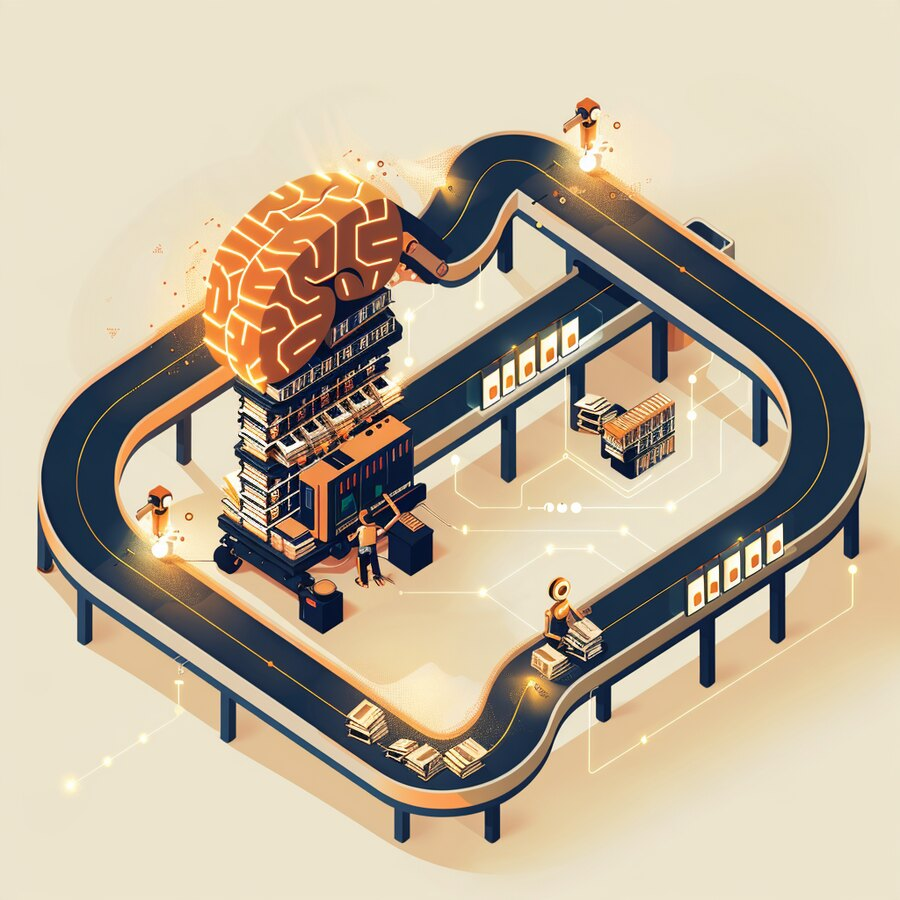
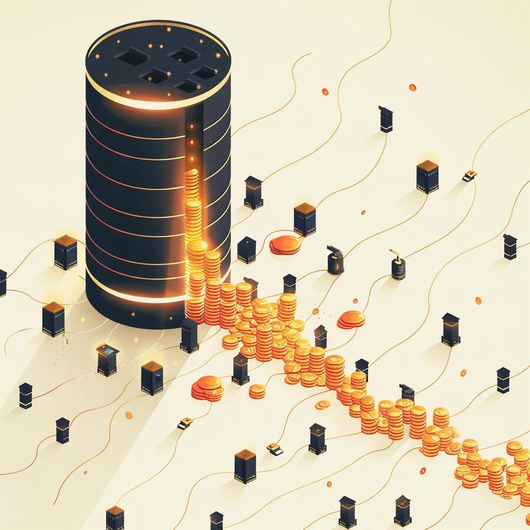
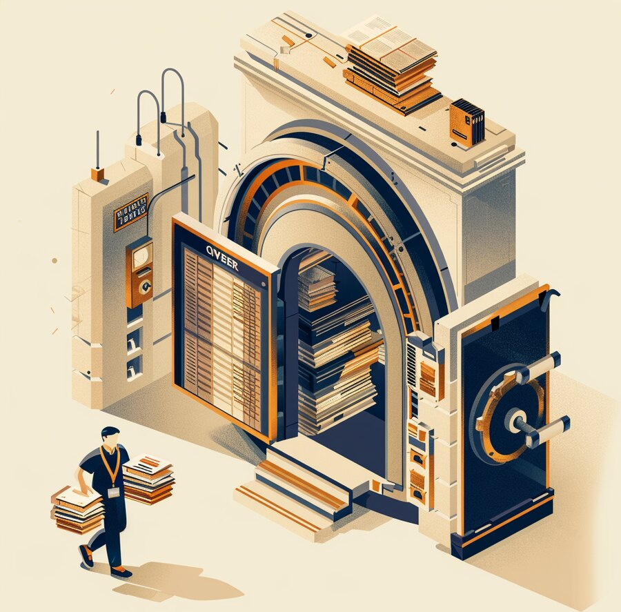

The Signal
| IN THIS ISSUE |
AI & INTELLIGENCE The model price war: GPT-6 Sol & Luna cut rates ~50% | DATA NetApp bets on AI-ready data & sovereignty at scale | APPLICATIONS Apple patches a zero-click CoreGraphics zero-day | CLOUD Nvidia’s Anthropic compute tops $180 billion |
CS
Get it in your inbox
Subscribe free — a new edition weekly |
INFRASTRUCTURE AMD buys World Labs for $8.2B in the chip arms race | NETWORK Meta’s ‘Petal’: the first petabit subsea cable | IDENTITY & ACCESS Identity’s new job: policing what agents do | CYBERSECURITY Denmark’s 8.8M-record breach via trusted access |
AI is getting cheaper to use — and ruinously expensive to build.
Two numbers from the same week tell the whole story of the AI economy. On one side, it keeps getting cheaper to use: OpenAI’s new GPT-6 Sol and Luna models cut API prices by about half — and the company says the cut is permanent, not a promotion — while rival releases pushed frontier prices down across the board. On the other side, it is ruinously expensive to build: Nvidia disclosed that its contracted compute with Anthropic alone now tops $180 billion, part of roughly $517 billion in compute Anthropic has committed to in eleven months, against a 2025 revenue of about $2.5 billion and an operating loss near $8 billion. The thing you buy is deflating; the business selling it is, for now, losing money on a historic scale.
For a CEO or CFO, that gap is the strategy. The opportunity is real and immediate: AI unit costs are falling fast enough that use cases you shelved last year as too expensive may now pencil out, so it is worth re-running the numbers on automation, support, analysis and content. The risk is that today’s prices are an investment, not a market-clearing rate — subsidized by investors betting on scale that has not arrived. Prices this good may not last, and not every provider burning billions will still be standing when the subsidies thin.
Our read. Exploit the deflation, but do not architect your business on the assumption it is permanent or that any one vendor is forever. Keep your models swappable behind an abstraction layer, favor short and portable commitments over long lock-ins at today’s rates, and model a world where inference costs more and a supplier or two consolidates. Ride the discount; hedge the economics. The companies that win this phase treat cheap AI as a gift to use aggressively and a dependency to manage carefully — at the same time.
| 1 AI & INTELLIGENCE | MODELS · PRICING |
OpenAI’s GPT-6 Sol and Luna cut API prices ~50%, and rivals followed — a permanent reset, not a promotion.
OpenAI released GPT-6 Sol and Luna with API prices cut to half or less of the prior 5.6 generation: Sol at $2 per million input and $10 per million output tokens (down from $4/$20), and Luna at $0.10 / $0.50 (down from $0.20/$1.20). The company credits caching and inference gains and says the cut is permanent. The move landed within hours of Anthropic’s Claude Opus 5.5, and frontier prices fell across the board — Sol now matches the tier that cost twice as much a quarter ago, at higher reliability. The capability you were rationing on cost just got materially cheaper.
Our read. Re-run the math on anything you shelved for being too expensive to automate — summarization, triage, drafting, code, analysis — because a 50% price cut changes which use cases clear their ROI bar. But build for a moving target: put a model gateway between your apps and any one provider so you can route to the best price-per-quality today and switch tomorrow, and track cost-per-task as a first-class metric. The models are competing to be the cheapest smart option; make them compete for your workload, not the other way around.
| 2 DATA | AI-READY DATA · SOVEREIGNTY |
NetApp’s new ‘Novus’ splits metadata from data for AI-factory speed — and leans hard into data sovereignty.
At its INSIGHT conference, NetApp introduced Novus, a storage architecture built for “AI factories” that separates metadata from data so the two never compete for the same controller — the metadata bottleneck that chokes large-scale AI training and inference. The first configuration pairs Novus Data Director software on standard x86 servers with ONTAP data systems, targets up to 100 TB/s and zettabyte scale, and is orderable now. NetApp also pushed on governance and sovereignty with Keystone Sovereign (regional data-residency and operational controls, starting in France and Germany), and extended its data engine to discover and prepare unstructured data across other vendors’ storage too.
Our read. The unglamorous truth of enterprise AI is that models are easy to rent and data is hard to feed them. Most organizations’ useful data is scattered, unstructured and poorly catalogued — and that, not model choice, is what stalls AI projects. Two moves matter: invest in the plumbing that makes data discoverable, governed and fast enough to serve AI (metadata, catalogs, lineage), and treat data sovereignty as a design constraint now, because where your data lives and who may operate on it is becoming a regulatory and board-level question. The companies that win with AI are the ones whose data was ready for it.

| 3 APPLICATIONS | ENDPOINT · ZERO-DAY |
Apple patched a CoreGraphics zero-day — a malicious image or document could run code, no tap required.
Apple shipped emergency fixes for CVE-2026-86950, an out-of-bounds write in CoreGraphics, the framework that renders images and documents across iOS, iPadOS and macOS. A maliciously crafted file can corrupt memory and execute code when the system simply processes it — the kind of zero-click path used in high-end spyware. Apple says it was exploited in an “extremely sophisticated” attack against specific targeted individuals; the flaw was reported by Meta’s security team. Patches arrived in iOS/iPadOS/macOS 26.7.1 (and Sequoia 15.8.1), and CISA added it to the Known Exploited Vulnerabilities catalog on September 29.
Our read. Mobile is part of your attack surface, not an exception to it. Zero-click image bugs defeat “don’t click suspicious links” advice entirely, so the control is speed of patching: push the update across managed devices now, and for high-risk roles (executives, finance, anyone targeted) consider Apple’s Lockdown Mode, which blunts exactly this class of attack. Treat phones and laptops that hold corporate access as endpoints that need the same patch SLAs as your servers.
| 4 CLOUD | AI COMPUTE · CONCENTRATION |
Nvidia says its contracted compute with Anthropic alone tops $180B — a scale that is now a concentration risk for everyone.
Nvidia disclosed that the contracted value of cloud compute tied to Anthropic now exceeds $180 billion, built from overlapping cloud, equity and infrastructure agreements across several data-center operators, including about 2.5 GW of Nvidia capacity due by 2028. It is one slice of the roughly $517 billion in compute (about 14.8 GW) Anthropic has committed to in under a year. Numbers like these used to describe national infrastructure programs; now they describe a single company’s compute pipeline ahead of a possible IPO.
Our read. You do not have to be Anthropic for this to matter. When a handful of AI labs and cloud providers are locking up most of the world’s advanced compute, capacity, pricing and even availability for everyone else depend on a few balance sheets and a few supply chains. Treat concentration as a live risk: keep a second cloud or model option for anything critical, put capacity and price protections in writing, and watch the financial health of the providers you lean on. The upside of scale is cheaper AI; the downside is that your supply now rides on someone else’s very large bet.

| 5 INFRASTRUCTURE & HYBRID CLOUD | SILICON · M&A |
AMD is acquiring Fei-Fei Li’s World Labs for $8.2B — a talent-and-IP bet to design silicon around world models.
AMD agreed to acquire World Labs — the two-year-old “spatial intelligence” startup founded by Stanford’s Fei-Fei Li, which builds models that generate and simulate 3D worlds — in an all-stock deal worth about $8.2 billion, its largest since Xilinx. Li will join AMD as chief scientist. The logic is less about today’s products than about designing future chips around “world models” and physical AI (robotics, simulation), and about securing scarce top-tier AI talent. It lands amid an unprecedented compute arms race — Nvidia’s nine-figure Anthropic commitments, take-or-pay GPU contracts, and hyperscaler capex near $660–690B for the year.
Our read. For buyers of infrastructure, the signal is that the silicon roadmap is now being shaped by who owns the AI talent, and the market is consolidating around a few vendors. That can be good — more competition to Nvidia may ease supply and price — but it also deepens your dependence on a handful of chip and cloud suppliers. Keep your workloads portable across accelerators where you can, hold vendors to delivery and power commitments, and treat “which silicon” as a strategic sourcing decision, not just a procurement detail.
| 6 NETWORK & CONNECTIVITY | SUBSEA · CONSUMER DEMAND |
Meta’s ‘Petal’ is the first transoceanic cable built for 1 petabit per second — roughly twice today’s biggest.
Meta unveiled Petal, a 7,000-km US-to-France subsea cable engineered to carry 1 petabit per second (about 1,000 Tbps) — roughly twice the capacity Meta attributes to today’s largest transoceanic systems, and the first ocean-spanning cable designed for petabit-class throughput. Built with NEC, Sumitomo Electric and Orange using two-core fiber in a 24-pair system, it enters service in 2029. What is driving a cable this big is the consumer market: billions of people streaming video and messaging, now running generative-AI features inside apps like Instagram, WhatsApp and search — and AI-generated media is heavier than anything before it. The platforms that serve consumers at planetary scale are increasingly building and owning the pipes between continents, not renting them.
Our read. Consumer demand is now an infrastructure problem — and a competitive one. If your business reaches consumers (commerce, media, apps, support), the latency and resilience of these backbones shape the experience you can deliver, and the capacity race is being set by the few platforms that also own the AI and the cloud. Two questions for leaders: which physical routes does your customer-facing traffic actually depend on, and what is the fallback if one is cut or congested? And as hyperscalers come to own pipes, clouds and consumer platforms at once, how much of your reach to customers runs over a competitor’s infrastructure? Build route and provider diversity into anything customer-facing that cannot go dark.
| 7 IDENTITY & ACCESS | AGENTS · ACCESS CONTROL |
As AI agents move into production, identity is shifting from gating the front door to governing actions at runtime.
At its Oktane event, Okta launched an AI agent runtime gateway that sits in the path of an agent’s attempted actions and enforces authorization as they happen — moving identity beyond “who gets through the front door” to “what an autonomous agent is allowed to do once inside.” The framing matters: the rush to deploy agents is exposing decades of stitched-together identity tooling and the gaps between systems. Separately, Microsoft began tightening Entra ID sign-in against script-injection with stricter content-security policies rolling out through October — another sign the identity layer is being re-hardened for an agentic, automated world.
Our read. Give every agent its own identity, least-privilege scope and an owner — and govern what it can do, not just whether it can log in, because a compromised or confused agent with broad standing permissions is the next big incident class. Put agent actions behind runtime authorization and logging, start with read-only or low-stakes scopes, and require human approval for high-impact steps (moving money, changing configs, touching customer data). The identity program that only answers “who authenticated” is already a generation behind.
| 8 CYBERSECURITY | BREACH · TRUSTED ACCESS |
8.8 million records left Denmark’s national registry — not through a hack of the system, but through a partner’s legitimate access.
Denmark confirmed that personal records of about 8.8 million people were taken from its Central Population Register (CPR) — names, addresses and CPR numbers — a figure larger than the country’s population because the register also holds those who moved abroad or died. The notable part: attackers did not break the CPR system. They misused a private company’s legitimate, authorized access to query it, operating since at least September until unusual activity was spotted on October 2. It is the clearest example this week of a theme that keeps recurring — the breach walking in through a trusted third party.
Our read. Your perimeter now includes every partner, vendor and integration you have granted access to. Inventory who and what can reach your crown-jewel data, scope that access to the minimum, rate-limit and monitor it for abnormal query volumes, and require the ability to revoke a third party instantly. Contracts should mandate the partner’s own security and breach-notification. Firewalls and patches do nothing against access you authorized; the control is governing, watching, and being able to cut off the trusted connections themselves.

| THE THROUGH-LINE | ACROSS ALL EIGHT LAYERS |
| IN MARKET | NEW PRODUCTS THIS WEEK |
| ON THE RADAR | EVENTS & CONFERENCES |
| ABOUT CYBERSAINYA | DIGITAL TRANSFORMATION PARTNER |
CyberSainya is a digital transformation partner. We help organizations turn IT, security, and AI from sources of risk into engines of growth — complexity made simple. That means clear strategy, the right technology, and a partner who stays in the room long after the decision is made: advisory and consulting, security and IT assessments, executive workshops, and hands-on execution. Through our AI products division, CernoGlobus, we build practical, security-by-design AI that puts enterprise-grade protection behind everyday automation.